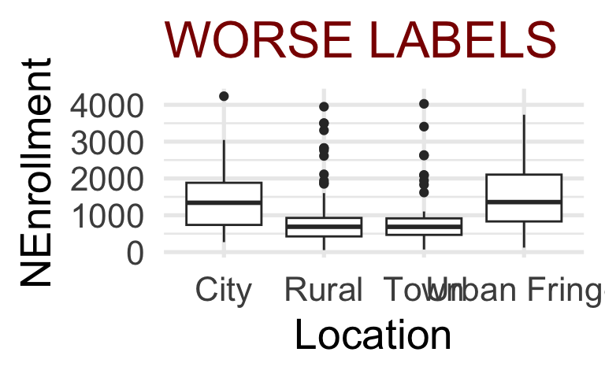
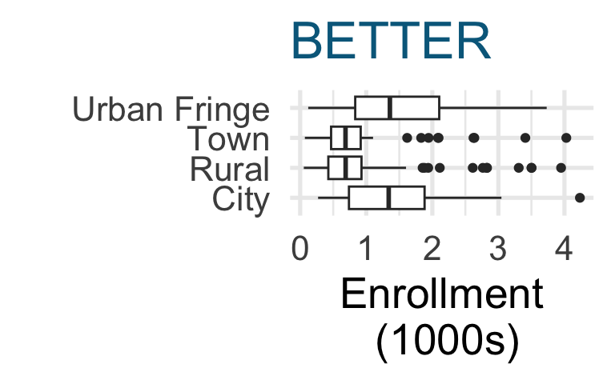

Graphics: Design Effective Visualizations
Module Learning Outcomes
After this section, you will be able to:
- Critique statistical graphics based on design principles.
- Recognize common misleading design choices for data visualizations
- Recognize data visualization that tells a true story, identifying elements that emphasize the main finding and make the figure easy to interpret at a glance
Reference Materials
- Beyond Multiple Linear Regression Ch. 1.5
- Ecological Models & Data in R Ch. 2 discusses graphics, but is not recommended as the approach to reading in data, writing R code, and generating graphs in R is very different to that used in this course.
- A comprehensive, and free, supplemental reference is Fundamentals of Data Visualization by Claus Wilke
It’s suggested that you refer to the above materials as needed after doing this section, with particular focus on the topics you found most challenging.
Inspiration
Above all, show the data.
But…
The Numbers Don’t Speak for Themselves.
C. D’Ignazio and L. Klein, Data Feminism
In visualizing data, we use graphics to gain and communicate an honest understanding of data in context.
Motivation: Imagine First!
Figures are a crucial tool for exploring your data and communicating what you learn from the data.
Whether you are doing a quick check to assess basic features of a dataset or creating a key figure for an important presentation, the best practice is to work thoughtfully.
The I.C.E.E. method:
- Imagine how you want your graph to look, before you
- Code. Once you have the basic starting point,
- Evaluate your work, and
- Elaborate (refine it).
Repeat until the figure is as awesome as it needs to be.
NO To Mindless Copy/Paste
Too many of us fall into the trap of starting to write code (or copy/pasting it!) before pausing to think carefully about the desired outcome, then settling for the first vaguely relevant result (or delighting in the unintended outcome…).
You can do better than mindless copying! Only mindful copy-pasting allowed.
This section provides some advice to get you started. It can also provide inspiration for constructive critique of others’ graphics.
Here we focus only on the I_EE parts of the process, where you design and assess graphics. Code will come later.
Appearance Goals
Specifically, how exactly should a graphic look? There are so many choices: color, size, text and more. What are best practices for creating something beautiful, that represents the data honestly, and is easy to understand?
This section will provide some rules of thumb to help you Evaluate statistical graphics. It will also teach you to spot common problems and suggest ways to fix them, allowing you to provide constructive critique (to yourself or to others!) about how to Elaborate and refine data visualizations.
You still have your freedom!
As you digest all these rules and tips, you may wonder: “Do I have to always obey every one?” Well…No, of course not. Be creative!
Sometimes it’s OK to break these rules when you have thought it through and with a good justification.
A good justification means that in your particular case, breaking a certain rule will make your graph more informative, easier to understand, or better at telling the story you’re highlighting.
Learning Objectives
This section will give you some basic tools to:
- Graph data with integrity, avoiding misleading design choices
- Tell the right story, including elements that emphasize your main finding and make your figure easy to interpret at a glance
Bye, Junk!
Our first principle is: if it doesn’t need to be in your graph, it shouldn’t be there. Keep things as simple as possible. What are some justifications for a need to include an element in a plot?
- It is crucial to the story you are telling, or the research question you are answering.
- It emphasizes your main point. For example, some plots may not need color, and in others it may add crucial visual contrast to highlight a main point.
- It makes the graph easier to read and understand
- It makes the main message of the graph more memorable
If you need it, include it, but if not, keep it simple!
Imagine you are using very expensive ink to print every element of the graph. Is every drop of in you’re using really worth it? If not, take it out. As influential data visualization thinker Edward Tufte put it in The Visual Display of Quantitative Information,
A large share of ink on a graphic should present data-information, the ink changing as the data change. Data-ink is the non-erasable core of a graphic…
In other words, don’t let annotations, labels, grids, etc. overwhelm the visual impact of your data:

Cartoon source: https://freshspectrum.com/data-ink-ratio/
Check: Critique the Pie
The figure below, from a Forbes article on mobile operating system crashes, is pretty awful.

What is one main conclusion from the graph above? (It’s pretty confusing to interpret, so you may have to study carefully to find something…)
Now that you have identified one main conclusion from the graph, what is one element of the plot that obscures that conclusion, is NOT necessary, and could be removed to improve the plot? Answer constructively - as if the person who made the plot was incredibly smart and someone you admire, and to whom you wanted to be kind but helpful.
Proportional Ink and Axis Scales
For bar graphs and other filled-area plots, the area of a graphic element should correspond to the proportion of the data it represents.
This principle might be violated if the lower limit of a count/frequency axis is not 0. If you’re showing the number or proportion or percentage of observations in categories, it’s usually best to set the lower limit of the axis to 0.
If you don’t start at 0, make sure the “at a glance” interpretation of your figure is not misleading!
A similar principle applies for plots of quantitative variables if they use filled areas to represent numeric values and there is some value (zero or another threshold value) that is an important reference point.
For optional additional detail on choosing honest axis limits and more examples, check out the blog post by the excellent but (sorry) profanely named Calling B*** project.
An example from Chapter 17 of C. Wilke’s *Fundamentals of Data Visualization shows the “Stock price of Facebook (FB) from Oct. 22, 2016 to Jan. 21, 2017”:

Why is the Facebook figure above ‘bad’? Mark all correct answers as TRUE.
The graph suggests that Facebook stock value dropped dramatically around November 1, 2016. But it actually only lost about 10% of its value.
The grey area should be plain white, not colored in.
The stock price values appear too jagged and should be smoothed out.
There are some stock price values that appear to be outliers and should be removed.
- In this case, it would probably be less misleading to use a y axis ranging from 0 to 135 instead of 110 to 135.
- A line chart could also be used here (without filling in the grey area), but using the color emphasizes the values rather than the trend over time.
- We can not just change data values to make them look how we like. If we wanted to emphasize the smoothed trend over time, we could show the smoothed curve atop a scatter plot of the original data points, which would present the desired message without altering the data. If we did average over time before plotting, it should be clearly noted (for example, “Weekly average Facebook stock prices…”).
- Even if there are outliers (there are not extreme ones here), it is only acceptable to exclude them from analysis if you can verify that they are errors.
Consider two ways to try to “fix” the figure (again from Wilke).
A.

B.

Why is the Facebook figure above ‘bad’? Mark all correct answers as TRUE.
Which of the figures above solves the proportional-ink problem with the Facebook stock price plot?
- A does it!
- B does it!
- Actually maybe both of them do it…
- Neither of them solves the problem.
A accurately shows the reduction in stock price as a proportion of the initial price. But what about B? Some would say B accurately shows the amount of value lost (and then regained) over time. Others would argue that it is as bad as the original, for similar reasons - the graph shows the absolute lost value, not the proportion lost value. So B may be OK, or bad, depending on your perspective.
Some would say B accurately shows the amount of value lost (and then regained) over time. Others would argue that it is as bad as the original, for similar reasons - the graph shows the absolute lost value, not the proportion lost value.
Counts or Proportions or Percentages?
- For categorical data, should you show the Count in each category, or the Frequency (proportion or percent)? It depends!
- When you want to compare by category across groups, and the total number in each group varies, frequency works well
- If representing differences in sample size between groups is crucial, counts work better
Grids and Boxes
Should your graphics include boxes, axis lines, and grid lines?
Well, it depends…
- Removing unnecessary axes, grids, and labels yields a cleaner plot that may be easier to take in at a glance – there is less to distract from the main story
- But… omitting needed baselines, tick marks, gridlines, and labels can cause confusion and make it hard to identify categories or estimate numeric values
- Scientific graphics usually need axis lines, with tick marks
- If a viewer will need to refer to an axis to estimate heights of bars or locations of points, then consider using gridlines for that axis.
- Instead of an entire grid, it may be more effective to include single lines indicating important threshold values
- Consider using a color that nearly blends into the background for grid lines, so that they detract as little attention as possible from the data
Example
Storytelling with Data provide an example of a cluttered figure where the trend over time pops out more as unnecessary grids and boxes are made less visible, then removed:

Optionally, if you’d like more examples, read S. Few’s 3.5-page article on when grid lines are helpful.
Text Elements: Titles, Labels, Size
When using text in a figure, ensure it is easy to read. Make sure no unneccessary text is included.
- Default size of text in figures produced by statistical software is almost always too small. Make sure your text is big enough to be easily legible in the context where you will present it (on the page in a report, on a slide for a presentation, etc.)
- Other than the title of the vertical (y) axis, all the text in a plot should be horizontal. This makes it easier to read.
- Axis labels should be self-explanatory
- Viewers should be able to guess what they mean accurately without looking at anything but the figure
- Use words instead of numeric codes or cryptic abbreviations
- Axis labels should also be as short as possible while remaining easy to understand
- Every plot should have a title. Sometimes this might be a literal title at the top of the graph, but those are relatively rare. More often in scientific work, a text caption appears below the figure. The first phrase/sentence of the caption acts as the figure’s title
Remember the melanoma rates over time figure from the last section?
What helpful changes did Storytelling with Data make to the text labels as they improved the figure?
The x axis labels are rotated so they are horizonal.
The title color is changed to blue and the axis labels to grey.
The box around the plot is removed.
- Rotating axis labels so they are horizontal is generally an improvement. To make this happen, the number of tick marks and labels on the x axis was also reduced. Notice the labels are much easier to read.
- The color changes helped too. The blue links the title with the trend it describes, and the grey makes the axis titles less prominent and lets the viewer focus on the data. Continue to the next section for more on using color…
- The box is gone, and it is a big improvement to the plot! But technically, you were asked about changes to the text labels…
Using Color
Color - used with care - can be an incredibly effective part of a data visualization.
- Ensure your color choices highlight the story you want to tell
- Consider using black and grey to help some elements fade into the background - for example, grid lines and labels that must be present but aren’t the most important elements
- Choose color combinations that look good and are distinguishable by color-blind viewers and in greyscale
- Default to using pre-defined color palettes provided by your software rather than choosing colors manually
- Consider being redundant - use size and/or shape as well as color to indicate groups.
- Use color consistently. Example: if “young” cases are red in one graph, don’t use red for “old” in the next graph
The video below, from Storytelling with Data, gives explanations and examples.
- If you have time, watch from 11:48 to 28:41 (about 17 minutes). This segment will play automatically in the clip below.
- If you’re in a rush, the most important sections (about 10 minutes) are:
- 13:57 - 15:12 (Sparing use of color)
- 18:44 - 21:25; see also the infographic of color in culture
- 22:25 - 23:10 (Color blindness - to view your graphs as someone with color blindness would, take a screen shot and try the simulator online
- 23:50 - 28:41 (Consistency)
Which of the following are lessons from the Storytelling with Data video on Being Clever with Color? Mark all correct answers “TRUE”.
Color grabs attention.
Color signals where to look.
Color should be used sparingly.
Too much color, and everything is highlighted - the viewer does not know what to pay attention to.
Color can show quantitative values, too, not just categories.
Colors have tone and meaning.
Not everyone can see colors.
Use color consistently.
Simple black and white is always the best choice.
- The human eye is naturally drawn to colors.
- Since color grabs attention, we expect it to direct us toward the most important stuff that is worthy of our attention.
- But…Too much color, and everything is highlighted - the viewer does not know what to pay attention to.
- Also, remember that the meaning and interpretation of colors varies by culture.
- Since some people can not see color, use color-blind friendly palettes and redundant coding (shape, text) where possible without cluttering the figure.
- Inconsistent use of color can be confusing and distracting.
- Sometimes black and white is great - but often color helps you tell a story!
When Things Overlap
Especially when graphing variables with long category values, you may end up with ugly, illegible overlapping labels. Two easy solutions, in order of preference, are to switch x and y coordinates so the “long” labels are on the y axis (in R, this resizes the plot area so that labels fit); or, to rotate the too-long labels, which eliminates the overlap but makes them harder to read than horizontal text.
Sometimes a title or axis label is too long and runs off the edge of the figure. Using a smaller font is not often an ideal solution. If you can’t just use a shorter label, consider adding line breaks.

Critique Practice
Try using what you have learned to provide a constructive critique of an example.
Consider the graphic below. At a glance, what do you think it means? Looking more carefully, what do you notice?

Pause to think: What changes, if any, would you suggest to the figure’s creator to make it clearer and easier to understand? Be sure to be constructive - gently explain any problems and suggest solutions.
Video Review
Wow, that was quite a lot of information! If you could use a brief review from a different point of view, check out the optional video from Kristen Sosulski:

Recap & Reflect: 12 Tips
The 4-minute video below summarizes design principles for data visualization in the form of 12 tips.
As you watch, make note of one or two tips that strike you (you’ll report your thoughts in the next section). Is there one that nicely summarizes an idea introduced earlier in the section? One you’re not sure about? One that you think is incredibly important? One that makes you say “Aha! Now I see why I loved/hated that visualization!”
Pause for Reflection
Take a moment to reflect on what you learned. Which Tip do you remember most clearly, think is most important, or want to challenge? Consider making a few notes for yourself for the future (you’ll have to make and critique plenty of graphics in your homework assignments).